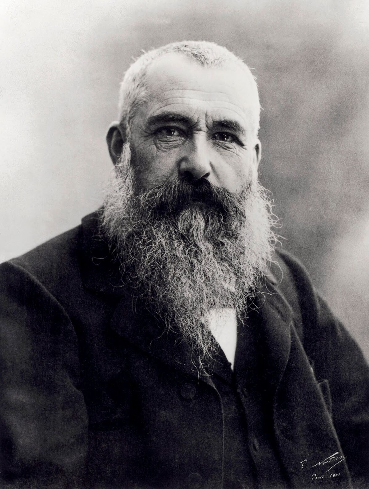

ArtMuse 2023 @ All rights reserved


Claude Monet
Claude Monet nasceu a 14 de novembro de 1840 e faleceu a 5 de dezembro de 1926.
Foi um artista francês e um dos líderes do movimento impressionista. Este desenvolveu o seu estilo único de pintura ao ar livre, capturando a luz e as cores nos seus quadros de uma maneira que impressionava os críticos e o público da época.
Após a sua morte, deixou para trás um legado duradouro na história da arte, influenciando muitos artistas posteriores.